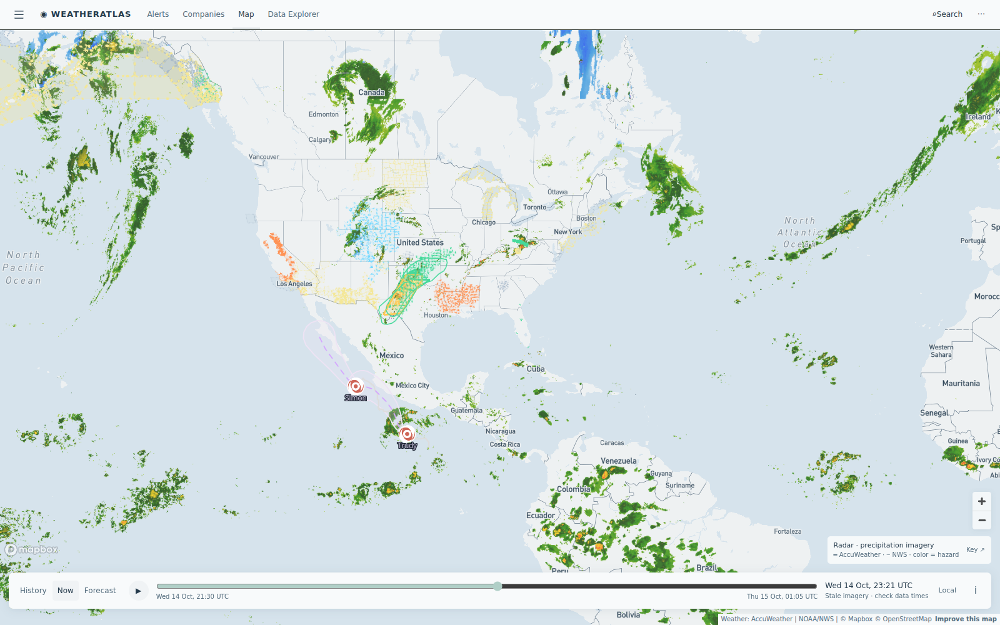

Daily severe-weather intelligence for LNG, refining, offshore, and terminal operators.

Live radar + active alert board from the AccuWeather-powered Atlas — captured ~22:50 UTC today.
| System / region | Status | Energy-asset impact |
|---|---|---|
| Rockies storm + tropical moisture — Texas to Illinois, through Thursday | ACTIVE TONIGHT | Severe Thunderstorm Warnings cover the Permian Spraberry Trend (100+ lightning strikes near producing wells today); Flood Warnings blanket Oklahoma basins (Canadian, Blaine, Kingfisher counties); 8000 strikes in the national feed — expect lightning standdowns, pad access delays, and tank-battery runoff checks through midweek |
| Ohio Valley / Appalachian arm of the same storm | FLASH FLOOD WARNINGS | Multi-county Flash Flood Warnings across West Virginia gas country (Doddridge, Gilmer, Harrison, Lewis, Ritchie) — water hauling and pad access on mountain roads are the exposure; EQT, HG Energy, Arsenal and Antero-area producing assets sit inside the warned zone |
| Southern California — offshore winds + heat | RED FLAG | Red Flag Warning and Wind Advisory on the Ventura County coast — elevated fire-weather flags sit near coastal LNG terminal sites (idle Clearwater Port among them); watch for utility psps attention at coastal facilities |
| East Pacific: Hurricane Trudy (Cat 1) · TD Simon · TD 28-E | OPEN WATER | Offshore of Mexico’s west coast — elevated seas on Mexico west-coast shipping lanes only; no Gulf or Atlantic development expected through 7 days per NHC |
Tonight's gap is a probability gap. At the Permian Spraberry Trend, AccuWeather holds tonight's thunderstorm probability at 70-84% with a second wave after 3 AM — while the free API caps the same hours at 24-41%. On the free feed, night shift plans full work. On AccuWeather, night shift plans cover.
Severe Thunderstorm Warning live tonight with 100+ lightning strikes near producing wells — AccuWeather 84% vs free feed 41% on the same hour. Two storm waves before dawn.
View live brief →Multi-county Flash Flood Warnings on the gas belt — water hauling and pad access on mountain roads are the exposure; free feed dries the night out too fast.
View live brief →